Japan / Ishikawa / Hodatsushimizu
Hodatsushimizu, Ishikawa: things to do, food and stays
Hodatsushimizu · Ishikawa
Hodatsushimizu
Highlighted on the Ishikawa map.

Stay
千里浜やわらぎ温泉 ホテルウェルネス能登路（HMIグループ）

Chirihama Yawaragi Onsen Hotel Uerunesu Noto Michi (HMI Gurupu)
Hotel at Satohamayawaragi Onsen in Shikinami, Hodatsushimizu with free-flowing hot spring baths.
Dining
蕎麦処 上杉

Sobadokoro Uesugi
御菓子司 たにぐち
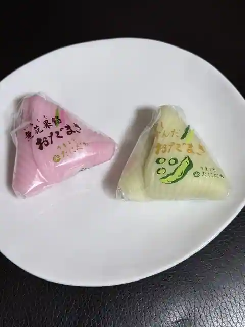
O Kashi Tsukasa Taniguchi
焼はまぐり かどや
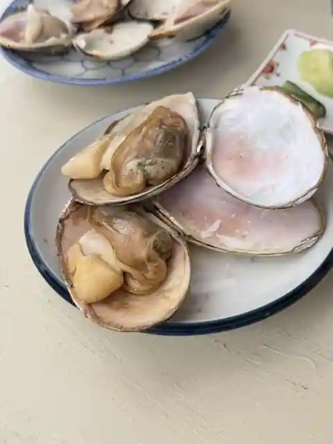
Yaki Hamaguri Kadoya
cafe&bar la socree
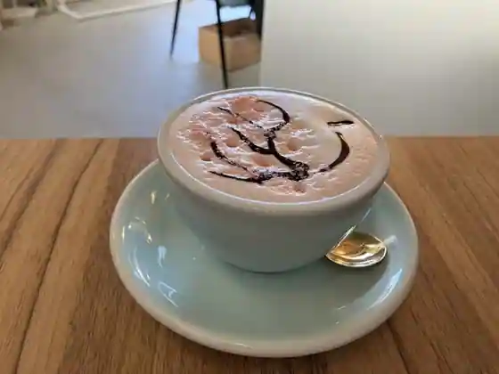
cafe&bar la socree
ホテルウェルネス能登路
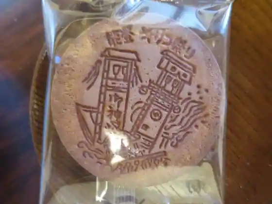
Hotel Uerunesu Noto Michi
きたもと美食倶楽部
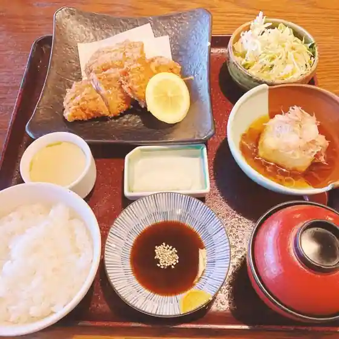
Kitamoto Bishoku Kurabu
海風
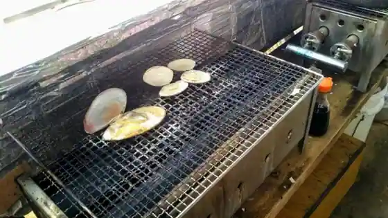
Umikaze
かなもり
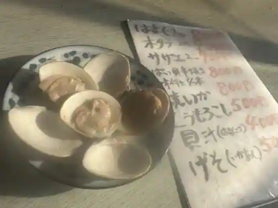
Kanamori
ウミネコパーラー
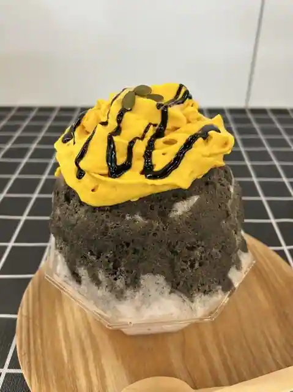
Uminekopara
らーめん AJ 今浜店
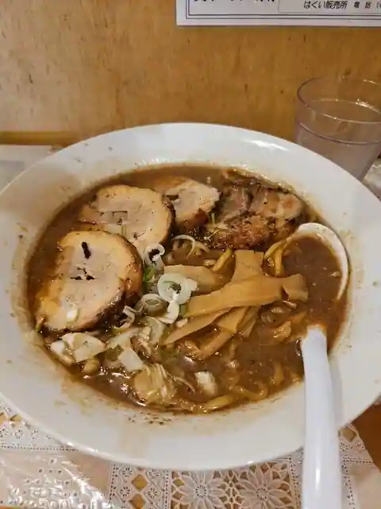
Ramen AJ Imahama
クチノトマーケット
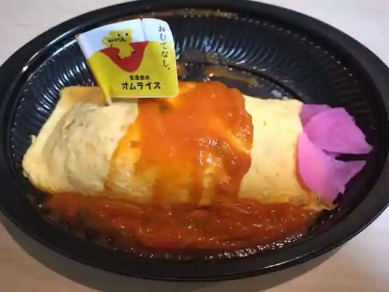
Kuchinotomaketto
焼肉の旬彩 牛太郎
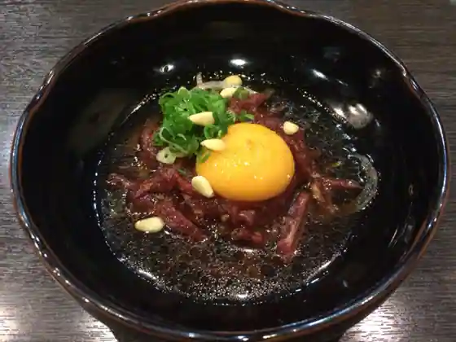
Yakiniku No Jun Sai Gyutaro
なぎさ亭
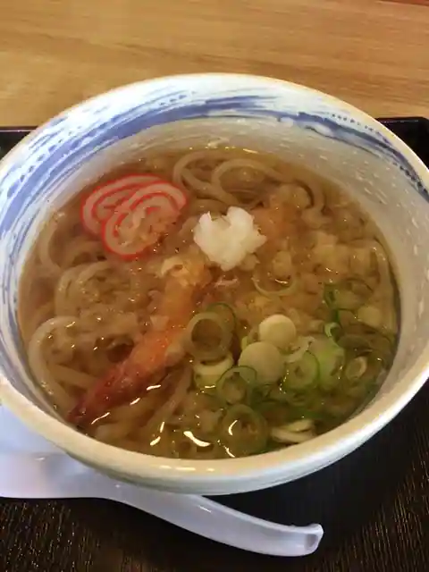
Nagisa Tei
軽食・喫茶 こでまり
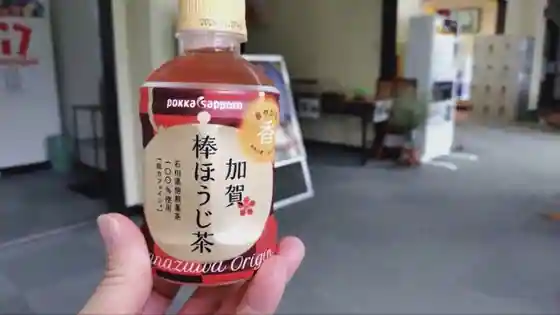
Keishoku Kissa Kodemari
ビーチカフェ・ルアナ
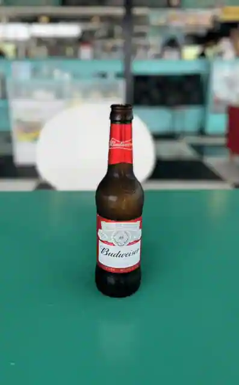
Bichi Cafe Ruana
ちさと
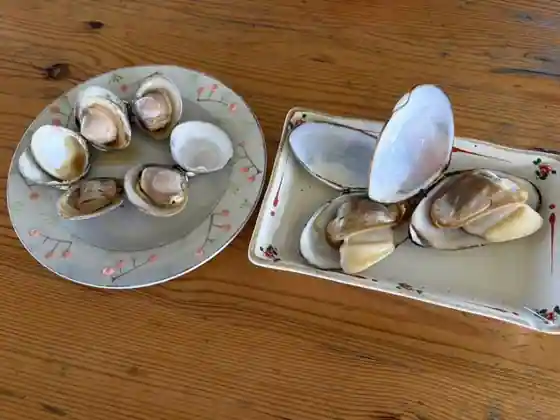
Chisato
かっぱ鮨
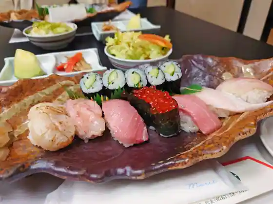
Kappa Sushi
宝達山本舗 松月堂
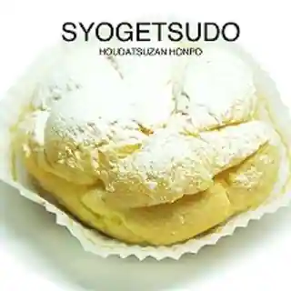
Takara Tatsuyama Honpo Matsuzuki Do
志お食堂
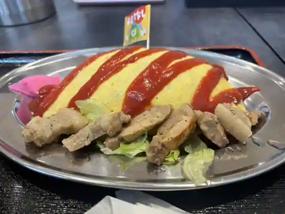
Kokorozashi O Shokudo
にく焼 かつおちゃん
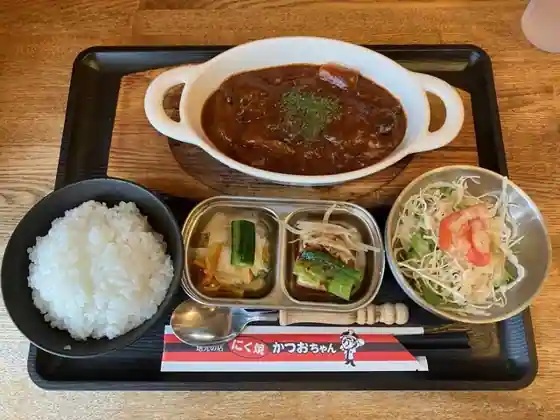
Niku Yaki Katsuochan
味好
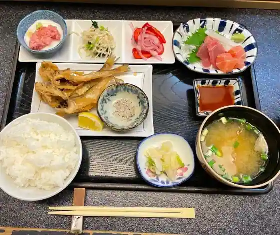
Aji Ko
Sights
Densetsu no Mori Park (Moze Park)

Takara Tatsuyama

Oshimizu Tokusan Chokubai Tokoro

Shio Parking Area (Nobori Kudari)

Suemori Castle Ruins (Ken Shitei Historic Site)
Takara Toru Kanayama Kozan Ato
Kita Ie (Kuni Shitei Juyo Bunkazai)
Egg Station Tamago no Eki
Takara Tatsuyama Honpo Matsuzuki Do
Imahama Beach
Yama no Ryugujo
Chirihama Nagisa Onsen Sato Yu Chirihama
Takara Yu
Sanden Kanaya Burial Mound (Kokushi Ato Shitei)
Yoshimasa Tera no Kiku Sakura
Takara Toru Kuzu Hall
Ami Budo Sono
Hotel Uerunesu Noto Michi
Sugawara Shrine
Toreja Famu
Usugamine Promenade (Rekishi no Michi Hyakusen)
Kokorozashi Ko Sakura Village Burial Mound Park
Okabe Ie (Ken Shitei Yukei Bunkazai)
Obachan no Yado
Joren Tera no Shidarezakura (Machi Shitei Tennenkinembutsu)
Tarumi Taki
Naka Village Tofu Mise
O Kashi Tokoro Menden Kashi Ho
Nakagawa Kashi Ho
Yamachi Shoyu (Chikaoka Ya Shoyu)
Sakamoto Budo Sono
Kuzu Village
O Kashi Tsukasa
Nature Farm Moto Ya
Myoho Wa Tera no Nanten (Ken Shitei Tennenkinembutsu)
Hodatsushimizu Town Hall